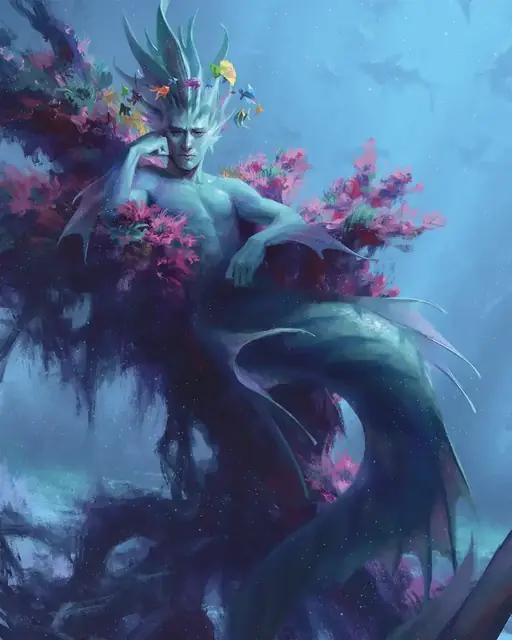

Хождение по воде
Water Walk
3 уровень, Преобразование

Время сотворения Действие или Ритуал
Дистанция 30 футов
Компоненты В, С, М (кусочек пробки)
Длительность 1 час
Классы Артефактор, Друид, Жрец, Следопыт, Чародей
Это заклинание дарует способность перемещаться по жидкой поверхности — такой как вода, кислота, грязь, снег, зыбучий песок или лава — как если бы это была безвредная твёрдая поверхность (существа, идущие по жидкой лаве, всё равно могут получать урон от жара). До десяти согласных существ, видимых вами в пределах дистанции, получают эту способность на время действия заклинания.
Получившее эту способность существо при перемещении с поверхности жидкости в саму жидкость должно делать это Бонусным действием, но если такое существо падает в жидкость, то оно падает через поверхность в жидкость без преград.